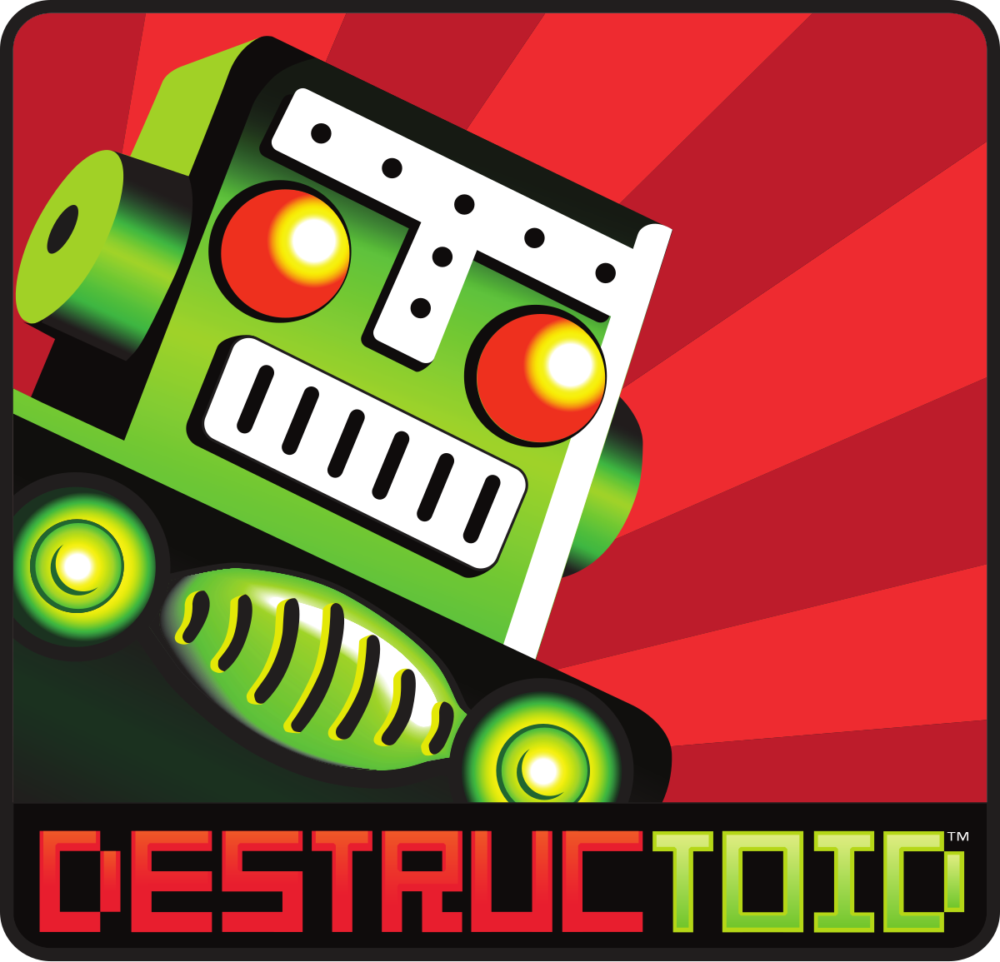

Outer Wilds is a brilliant Sundance Sci-Fi experience, with a perfect balance of space exploration, mystery solving and storytelling. The solar system designed by Mobius Digital is an outstanding playground, full of odd surprises and unique events. Above all, it's a place worth exploring and it's perfectly integrated into the time loop structure of the game. If you love to feel a genuine sense of discovery and adventure, it's definitely your game.
85/100

Exploring the uncharted worlds of Outer Wilds feels like a true adventure in ways most games never achieve.
8.4/10
Beautiful, hand-crafted solar system. Engaging mystery which brings all the plot threads together by the end. Interesting and varied environments. Time loop mechanic is used to great effect. Open world lets you solve the mystery at your own pace.
90/100
Outer Wilds' deeply captivating narrative and plentiful mysteries push you further into exploring its richly varied and stunning solar system. The time loop you're trapped in lets you craft bite-sized expeditions that all end up telling their own stories, irrespective of whether you make a monumental discovery or simply encounter a playful interaction. By letting you chart your own course and piece together its mystery at your own pace, Outer Wilds makes each of its expeditions feel incredibly personal and absolutely unmissable.
9/10

Beneath its charming and inventive worlds, Outer Wilds hides a cleverly unfolding mystery.
89/100

Outer Wilds proves there's still a sense of genuine adventure to be gained from games that commit to a set, fixed structure and design, rather than the kind of sprawling, endless expanses many contemporary titles set out to become.
90/100

Outer Wilds zit extreem precies en gedetailleerd in elkaar, als een gigantisch uurwerk waarbij alle tandwieltjes exact in elkaar passen. Ontdekken en verkennen zijn de hoofdmoot van deze game die blijft verbazen met een unieke en boeiende opzet.
9/10
Outer Wilds is a brilliant sci-fi game that trades guns for a compass
Challenging, beautiful planetary exploration
9/10